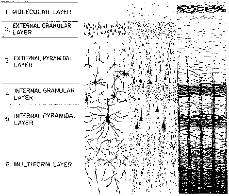

|
CNS: Cortical Network Simulator
Programming Guide
|
Overview
CNS is a framework for the fast simulation of cortically-organized networks. Network models are defined and run from MATLAB, but execute on NVIDIA GPUs, offering speed increases of 50-100x over CPU-based simulations. Cell types used in network models are defined using a combination of MATLAB and C++, but no knowledge of GPU programming APIs (e.g. CUDA) is required.
A "cortical" network model -- as CNS defines it -- is a neural network model in which cells are arranged in two-dimensional layers, where each cell in a particular layer is of the same type, i.e., maintains a similar set of state variables and updates them using the same algorithm. A well-known instance of a cortical network is the convolutional network.
The following are also cortical models:
This class of models is well-suited for simulating computations in real cortex, which itself has a 2-D laminar structure.
Diagram of a lateral view of a typical area of cortex showing the cortical laminae.
|  |
Cortical models are also well-suited to implementation on modern GPUs, which are optimized for data-parallel computation on 2-D grids of data.
While CNS models consist of cells arranged in two-dimensional layers, a 2-D layer can represent a feature space having N dimensions. This happens throughout cortex, and CNS provides an automatic conversion between N-D arrays in MATLAB and 2-D grids on the GPU.
Schematic showing how four stimulus dimensions (X, Y, orientation, and ocular dominance) are represented on the 2-D surface of visual area V1. From Lungeanu et al., 1999.
 |
|
How CNS might represent a four-dimensional stimulus space on a 2-D grid. Here, dimensions x and y are "inner" dimensions while t and f are "outer" dimensions.
 |
|
Cell-to-cell connectivity in CNS models is completely unrestricted. Any cell can be connected to any number of other cells in different layers, the same layer, or even to itself. There are two types of connectivity.
- Regular patterned. Cells are assigned to regularly-spaced grid positions in a common coordinate space, and each cell infers its input cells with reference to these coordinates. This scheme can be used to implement convolution as well as other regular connectivity patterns.
- Explicit synapses. Every cell has an explicit list of its input cells. This takes a lot more memory, and models run more slowly.
A CNS model can use either or both of these connectivity modes.
Some cortical models, such as the CBCL object recognition model, are feedforward. Cells compute their values based on input from hierarchically lower layers; they do not maintain internal state variables that evolve over time. Trained convolutional networks operate in a similar manner, but during training there is an additional top-down pass.
CNS is also capable of supporting dynamic models in which cells have states that change over time. One such example is a network of Hodgkin-Huxley neurons, in which each cell maintains its own membrane potential, the current state of its sodium and potassium channels, etc. Models like these are iterated over some number of time steps, with each neuron getting a chance to update its state variables once per time step.
CNS development occurs in two stages:
- Define layer/cell types.
- Build and run specific network models made up of those types of cells.
A collection of related cell types is called a package. You can develop your own packages from scratch, or use (and possibly modify) existing packages. Packages currently exist for CBCL-type feedforward models, convolutional networks, and Hodgkin-Huxley spiking simulations. The core CNS download contains a simple demo package that downscales an image and computes gabor filter responses.
All the cell types used in any CNS network model must be defined in a single package.
Each package is stored in a separate directory, and each cell type is defined by two files in that directory.
- Layer/cell attributes, defined in a MATLAB ".m" file. These include:
- Names of fields (constants or variables) that are maintained per layer, per cell, or per synapse.
- Data types of those fields (single-precision floating point or integer).
- Whether fields are private or public (readable by other cells).
- Number of dimensions a cell layer of this type will have.
- A compute kernel, written in C++ and saved in a ".h" file. Kernels are much easier to write using CNS than they are using the CUDA API directly. This is mainly because for each field you specify (above), CNS automatically provides a named macro that lets you read and write that field. You do not need to worry about how and where things are stored in GPU memory.
Just like classes in object-oriented programming languages, a cell type can be a subtype of a parent type. A subtype inherits the properties and fields of its parent type.
A package directory also contains one additional ".m" file which contains some non-type-specific definitions. Once written and compiled, a package can be used to instantiate any number of CNS models.
Once you have created (or chosen) a package of cell types, the process of building a network model and running it is done entirely in MATLAB.
- Define the network structure (in a MATLAB struct). This includes the following information:
- Name of the package you are using.
- Number of layers and the cell type of each.
- Size (number of cells along each dimension) of each layer.
- Cell-to-cell connections: either regular grid connectivity or explicitly enumerated synapses per cell.
- Values of constants and start values of variables.
- Run the model. This generally consists of:
- Initializing the above-defined model in GPU memory.
- Executing for some number of steps, possibly setting inputs and retrieving outputs between steps.
- Deallocating the model, releasing GPU resources.
Note that if a GPU is not available, CNS can also run your model on the CPU. This is sometimes also desirable for debugging.
The following is a partial list of the things CNS handles for you behind the scenes. If some of these terms don't mean anything to you, well, that's one of the benefits of using CNS.
- Memory management:
- Class of memory (global, texture, constant, shared, ....)
- Host-GPU transfers.
- Alignment and addressing.
- Dimension conversion (N-D to 2-D).
- Texture packing.
- Thread management.
- The GPU programming API.